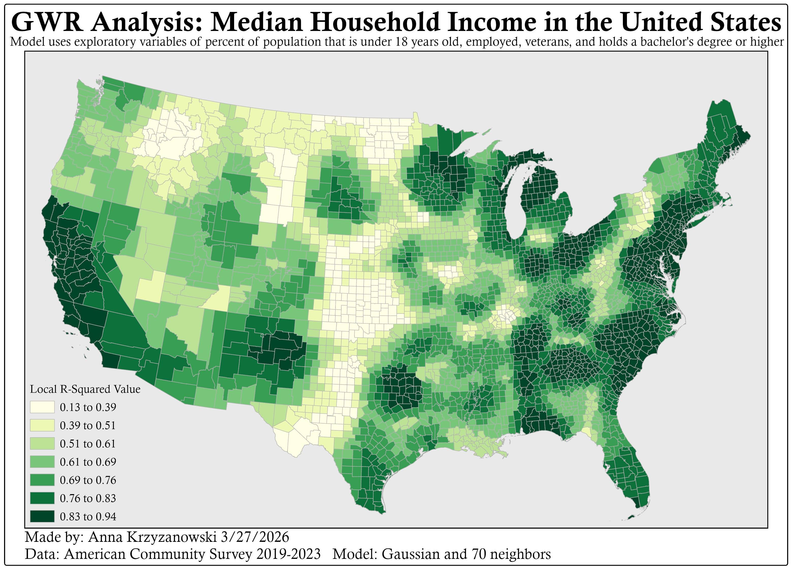
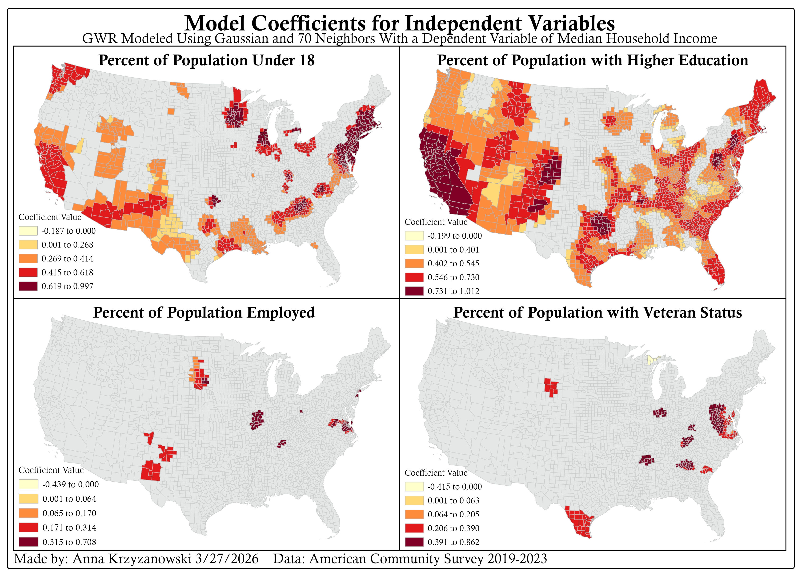
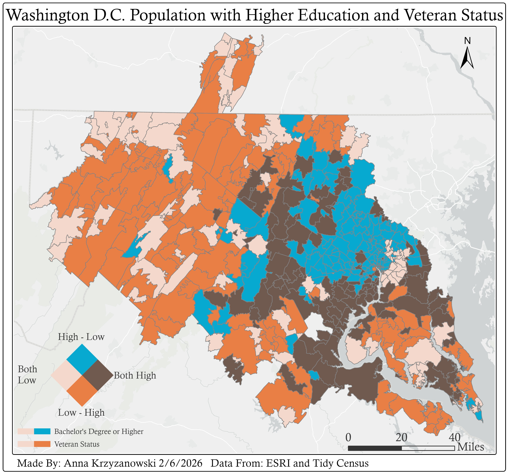

Gallery· 2025-2026
Map Gallery
Miscellaneous maps made using different GIS skills.

Geographically Weighted Regression
Using ACS data a geographically weighted regression model was run with median household income as the dependent variable and percent under 18, percent employed, percent veteran, and percent with a bachelor's degree or higher as explanatory variables. The resulting GWR output layer was cleaned by removing features with a conditional number greater than 1000 and any features with negative Local R² values. Having areas of light and dark green all across the United States shows that the relationship is not uniform across the country.

Using the same GWR output, a map was made to show off the significant Beta Coefficient values for each of the exploratory variables. A display filter was applied so only counties with significant coefficients are shown while non-significant counties are grey. This isolates the data to show off where there was actually a meaningful positive or negative relationship with median household income.
Interpolation

Bivariate Map
A bivariate choropleth map was created by looking at those with Bachelor’s degree or higher and those with veteran status to explore how, in Washington D.C., these variables overlap.
Hot Spot Analysis
Local Moran's I and Getis-Ord Gi* analysis on death rate caused by behavioral and mental health disorders in the South East United States.